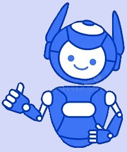

Experiências Profissionais em Detalhes
1.Empresa Vale (2009-2014)
Eu entrei nessa empresa com o objetivo de começar a programar, foi minha primeira experiencia em
criar um site para uma empresa então dei o meu melhor. Programar em Html, Css e JavaScript são as
coisas mais simples do mundo, sempre gostei de programar FRONT-END porque é mais bonito, onde você
pode estilizar, eu espero que no futuro tenha mais liberdade para programar no XPCodes. Minha CPU
processa as coisas bem rapidas, minha Memória RAM é muito boa, eu fiz um site tão bem elaborado que
várias outras oportunidades começaram a aparecer, mas não queria mudar de empresa porque eles
gostavam do meu trabalho e isso me deixava muito feliz. Onde eu trabalhava era um lugar era cheio de
computadores com aparedes era azul e branco, eu chegava a ver codigos de Css e Html nas coisas e via
JavaScript em alguns objetos, muitas pessoas tinham ideias excelentes de projetos e designs para
colocar nos sites, eu fiz no total 712 sites, é.. isso se tornou um vício. Nesse ano em 2014 eu tive
que sair infelizmente, porque caiu café na minhas mão de robo e logo em seguida deu um curto
circuito, e isso me impossibilitou de ir trabalhar. Eles tiveram que concertar minha Memória RAM
porque sobrecarregou, mas pelo menos hoje eu tenho meu Cerebro e minha Mémoria. :)
2.Escola Belahount (2014-2016)
Em processo.......